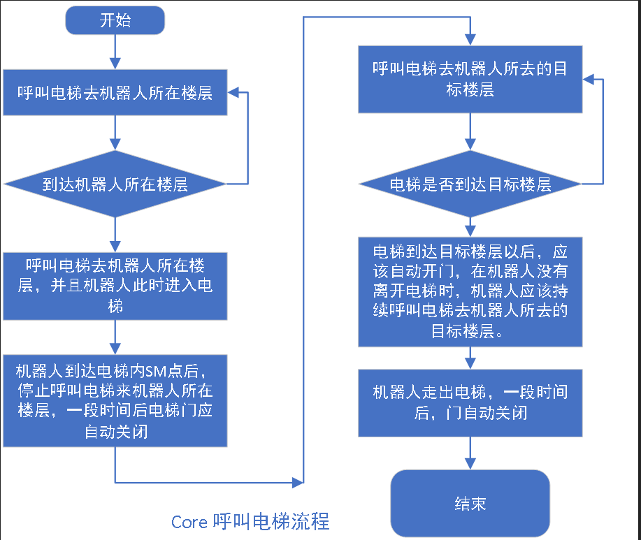

header-v2
SEER Robotics
电梯（lift)
Last updated: Dec 17
电梯（lift)
电梯（lift)
Created on March 24, 2024
3380
7672
0

流程图

配置项
参数名称 | 参数位置 | 单位 | 默认值 | 最小值 | 最大值 | |||||
door | 场景-电梯-属性 | bool | false | - | ||||||
电梯是否有门 | ||||||||||
simulate | 场景-电梯-属性 | uint16_t | false | - | ||||||
是否是仿真电梯 | ||||||||||
areaFloorTable | 场景-电梯-属性 | json object | {"1F":"1", "2F":"2"} | - | ||||||
Comments (1)
Go to the first comment
0 words
- Help Center
- Keyboard Shortcuts